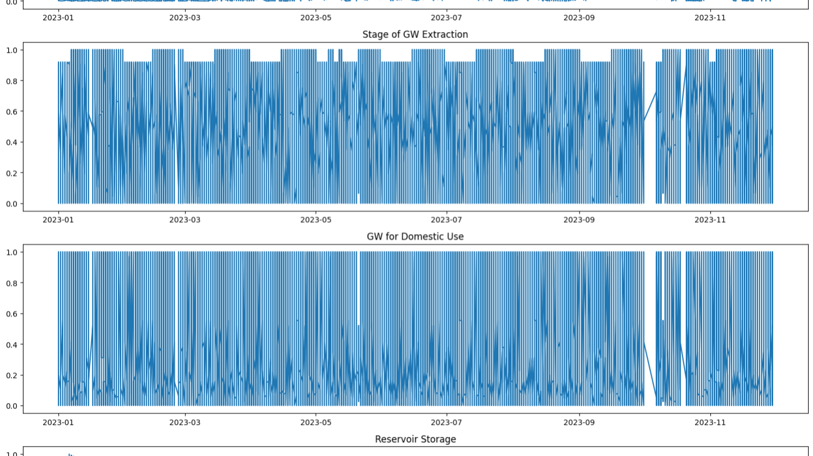
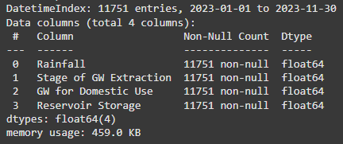
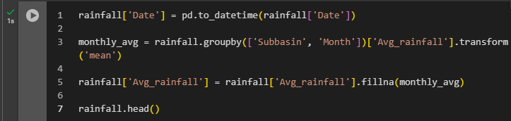
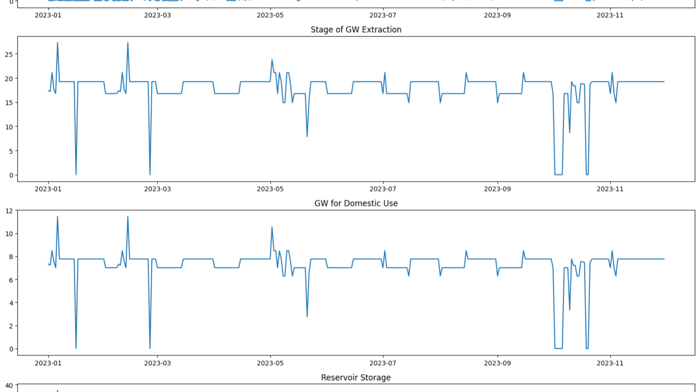
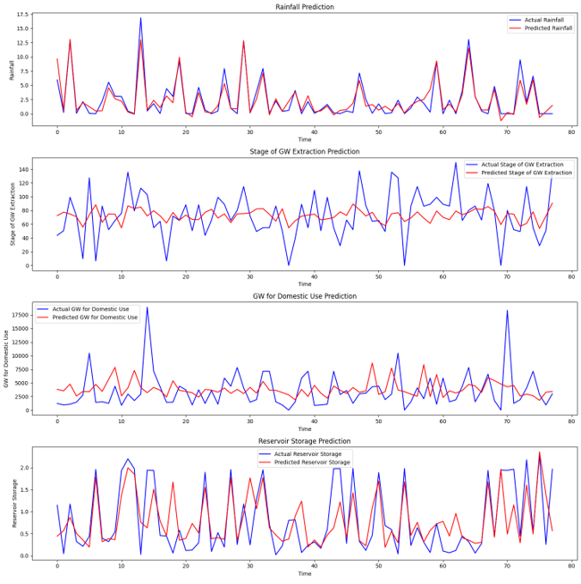

"Something is better than Nothing!"
In this article, I share about my first real world project experience in the data field. I chose an interesting topic to do my project which is a problem statement given in SIH Hackathon which is building a model to efficiently handle the water demand.
Finding the model & Features
I did my research and chose LSTM to be my model to forecast water demand. Interestingly, First I looked upon some projects built using this model such as stock forecasting then learned the architecture to better understand the LSTM. And it worked.
So, I went to build the project. As every student does, I went to ChatGPT because I had no idea where to start and found that I should collect three important types of data that describe water availability: reservoir levels, rainfall rates, and historical data on water usage.
Data Collection
Then started collecting the daily data of reservoir level and rainfall level (year: 2023) from data.gov.in and for water usage the daily data of water usage was not available so I used the yearly average data from data.opencity.in. This took me a 2 days to complete because most of the data repositories by government were not maintained well which led me to 404 ERROR!.
Then I merged them all three into one csv file and started cleaning it by removing rows with NULL values. Then merged them using Dates and Districts.
Facing Issues
My data had many variables that I didn't even understand. But again I just copied the code from chatGPT and found the performance is poor. The line plot looked awful and I couldn't find what's going wrong that made me frustrated.
Then I took a break and came back again to find a mistake that I have given a feature to predict the same feature but in different metrics. So Once I found that I realized my first mistake that
1. I am using the features which I don't even understand.
So, I went to YouTube to learn more about the domain and figured out which variables contribute to water demand and I used them to predict. (But still the plot looked crazy). As soon as, I started learning about the domain I used some tutorials to learn and write code on my own rather than just copy pasting from chatGPT.
And after seeing the tutorials I found ARIMA models like LSTM need timely Data but
2. I removed some dates which had null values.
So, I revoked and started to impute the null values with monthly averages.
3. And I found a problem with water usage which had yearly average.
Since, I couldn't able to find any daily data of water usage on the internet I used the data with the wrong values to find out what would happen. Basically I was expecting it to do well as other two variables were in the right order.
4. Messy Plots
Still, I keep getting the messy plots. So I went to chatGPT to find what is going on. It said the frequency of data is high which makes the plot not understandable. So I resampled them to make it interpretable.
5. Processing Time
Once done, I found that the learning process was so long. I waited day and night but still it is a never ending story...
So again, I went to watch some tutorial to find out about the Early Stopping condition which makes the model stops processing when it is not learning anymore. This way the time taken to process was reduced.
6. Fine Tuning
After training, I found that it needed some adjustments. That's when I realized that although I had learned about architecture and everything related to LSTM, I didn't fully understand the meaning of each parameter. So, I went to ChatGPT to learn about it and discovered that increasing the dropout value would help prevent overfitting. I then made the necessary changes.
Results
You can check out my project details here: paper link
Experience Gained
Overall it was a great project experience where I made mistakes, corrected some of them but learned a lot about my career. Moreover, I also experienced how a real world scenario of a data science project would look like. Here are the few things I learnt from my mistakes:
- Domain Knowledge is important (to know which features to use & more)
- NULL values need to handled properly
- Data Quality = Model Performance (because my model didn't perform well on yearly average even though I fine tune the model)
- Knowing the working of model is not enough. We must know its data requirements ( for LSTM we needed daily data) and parameters ( dropout is needed to prevent the overfitting)
- Finally, to fine tune maths is important especially algebra is needed (statistics is NOT ENOUGH)
Here is the link to my Collab notebook: notebook link
This whole project took me about 7 days to complete as it was my first time I was learning about everything before implementing it. Each step I took came with its challenges, from data collection, cleaning, and merging to visualization, modeling, and fine-tuning and Each challenge had its own level of difficulty.
And most of the all the processing time was so exhausting. Since, I was using a government laptop (6 years old) with 4GB of RAM and low power processor. So, I used Collab, where I had to constantly monitor whether the system was running, which kept me awake for two whole nights. All these efforts resulted in amazing outcomes, earning appreciation and feedback from the jury during the presentation.